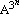
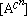
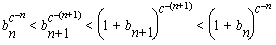
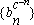
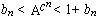

A generalization of Mills' Theorem
By Chris Caldwell
In the late forties Mills [Mills47] proved that there was a real number A>1 for which [] is always a prime (n = 1,2,3,...). The purpose of this short note is to prove the following theorem (from an exercise of Ellison [EE85, exercise 1.23]), for which Mills' theorem is a special case. As a bonus, this theorem shows there are infinitely many c's which each have infinitely many A's for which  is always prime (there are actually uncountably many choices of A [Wright1954]. We then approximate the least A for the sequence of primes(with c=3) after this proof.
- Theorem:
-
Let S={an} be any sequence of integers satisfying the following property:
(1) there exists real numbers xo and w with 0 < w < 1, for which the open interval (x,x+xw) contains an element of S for all reals x > xo.
Then for every real number c > min(1/(1-w),2) there is a number A for which is a subsequence of S.
- Proof:
-
Use (1) to define a subsequence {bn} of S recursively by
(2) b1 = least member of S for which b1c > xo.
(3) bn+1 = least member of S satisfying bnc < bn+1 < bnc + bnwc.Because c > 1/(1-w), and c > 2 (see the lemma below) we get the last two inequalities in the following revision of (3):
bnc < bn+1< 1+bn+1 < 1+bnc+bnwc < 1+bnc +bnc-1 < (1+bn)c.
For all positive integers n we can raise this to the c-(n+1)th power to get

showing that the sequence  converges. Call its limit A. Finally,

so = bn, the chosen subsequence of S--completing the proof. ∎
For the sequence of primes property (1) is known to hold with w=7/12 and xo sufficiently large, so we can follow Mills and take c = 3. Note that it is not necessary to start with the minimal prime satisfying (2) (bo > xo) as long as we can find the necessary primes satisfying (3) until we find one greater than xo (then we know all of the following primes exists).
The problem is, that even though surely there is a prime between consecutive cubes of integers (greater than one), we can not yet prove it! The best effective lower bound may be as large as the one in Cheng's draft paper [Cheng2003a]: 106000000000000000000. But it is trivial to prove, that if the Riemann Hypothesis hold, then there always are primes between consecutive integer cubes, starting with with bo = 2 [CC2005].
Mills did not give an explicit A, but it is traditional for authors to start with bo = 2 (even though the way Mills' wrote his result, starting with 2 would have been ruled out). Starting with bo = 2 and taking the minimal prime at each step gives us the minimal sequence (given RH):
2,
11,
1361,
2521008887,
16022236204009818131831320183,
4113101149215104800030529537915953170486139623539759933135949994882770404074832568499,
695838043769627416085392765735385928648359...(254 digits)...257390268487534179757699110378097045955949,
336918228195740742277307753365919464724735980446...(762 digits)...405013138097469593692676561694614253113386536243,
... (see Mills' Primes) showing that the constant A begins with the following digits (see Mills' Constant for more digits):
1.3063778838 6308069046 8614492602 6057129167 8458515671 3644368053 7599664340 5376682659 8821501403 7011973957 0729696093 8103086882 2388614478 1635348688 7133922146 1943534578 7110033188 1405093575 3558319326 4801721383 2361522359 0622186016 1085667905 7215197976 0951619929 5279707992 5631721527 8412371307 6584911245 6317518426 3310565215 3513186684 1550790793 7238592335 2208421842 0405320517 6890260257 9344300869 5290636205 6989687262 1227499787 6664385157 6619143877 2844982077 5905648255 6091500412 3788524793 6260880466 8815406437 4425340131 0736114409 4137650364
3793012676 7211713103 0265228386 6154666880 4874760951 4410790754 0698417260 3473107746 7757406400 7810935083 4214374426 5420408531,
For now (until an appropriate effective bound is found), the above number is conjectured to be the least Mills' constant, often called the Mills' number. There are of course infinitely many others (to see this start with any other prime, or note that if A works, so does A3, or ...)
Though amusing, this type of formula is useless for determining primes because we need to know the primes determined before we find A (and the subsequence of primes represented is so small!)
We end this note by proving an inequality used in the proof above.
- Lemma:
- If x > 1 and c > 2, then 1 + xc + xc-1 < (1 + x)c.
- Proof:
- Dividing by xc and replacing x with 1/x we arrive at the equivalent
inequality
0 < (1 + x)c - (1 + x + xc). (0 < x < 1)
The inequality clearly holds when c = 2 (because it reduces to x > 0) and when x = 0. Now if x>0, differentiate the right side with respect to c to get
(1 + x)c log(1+x) - xc log(x)
which is clearly positive, so the inequality above holds for all c > 2. ∎
(See also our glossary entries Mills' Theoremand Mills Prime.)